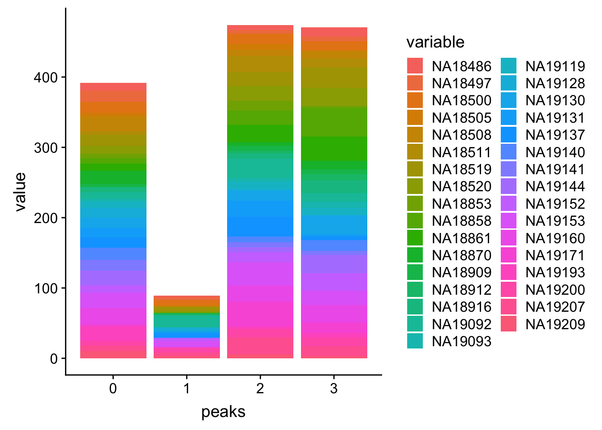
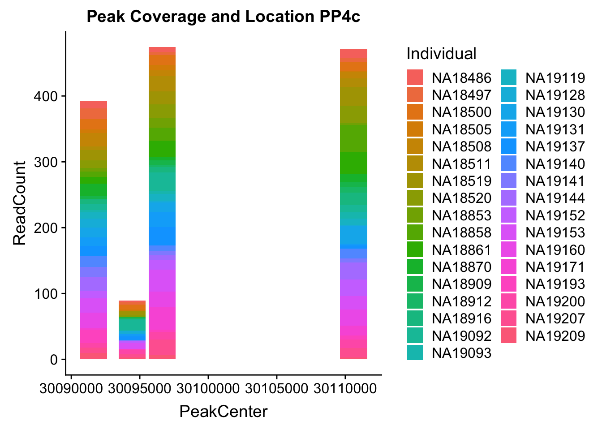
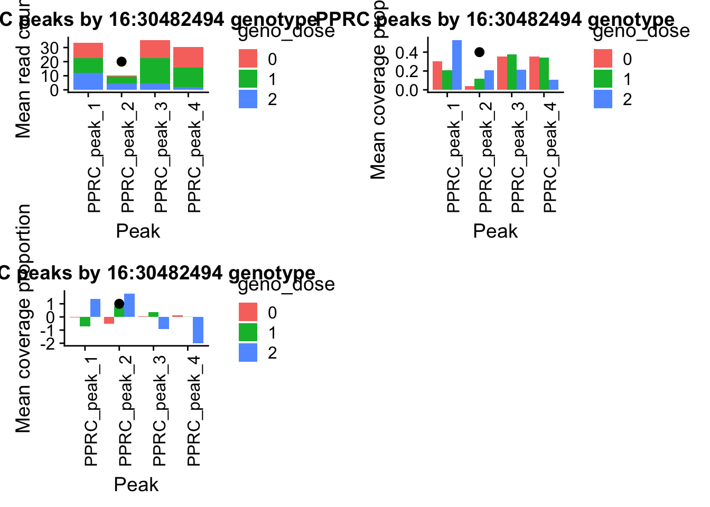

Last updated: 2019-02-15
Checks: 6 0
Knit directory: threeprimeseq/analysis/
This reproducible R Markdown analysis was created with workflowr (version 1.2.0). The Report tab describes the reproducibility checks that were applied when the results were created. The Past versions tab lists the development history.
Great! Since the R Markdown file has been committed to the Git repository, you know the exact version of the code that produced these results.
Great job! The global environment was empty. Objects defined in the global environment can affect the analysis in your R Markdown file in unknown ways. For reproduciblity it’s best to always run the code in an empty environment.
The command set.seed(12345) was run prior to running the code in the R Markdown file. Setting a seed ensures that any results that rely on randomness, e.g. subsampling or permutations, are reproducible.
Great job! Recording the operating system, R version, and package versions is critical for reproducibility.
Nice! There were no cached chunks for this analysis, so you can be confident that you successfully produced the results during this run.
Great! You are using Git for version control. Tracking code development and connecting the code version to the results is critical for reproducibility. The version displayed above was the version of the Git repository at the time these results were generated.
Note that you need to be careful to ensure that all relevant files for the analysis have been committed to Git prior to generating the results (you can use wflow_publish or wflow_git_commit). workflowr only checks the R Markdown file, but you know if there are other scripts or data files that it depends on. Below is the status of the Git repository when the results were generated:
Ignored files:
Ignored: .DS_Store
Ignored: .Rhistory
Ignored: .Rproj.user/
Ignored: data/.DS_Store
Ignored: data/perm_QTL_trans_noMP_5percov/
Ignored: output/.DS_Store
Untracked files:
Untracked: KalistoAbundance18486.txt
Untracked: analysis/4suDataIGV.Rmd
Untracked: analysis/DirectionapaQTL.Rmd
Untracked: analysis/EvaleQTLs.Rmd
Untracked: analysis/YL_QTL_test.Rmd
Untracked: analysis/ncbiRefSeq_sm.sort.mRNA.bed
Untracked: analysis/snake.config.notes.Rmd
Untracked: analysis/verifyBAM.Rmd
Untracked: analysis/verifybam_dubs.Rmd
Untracked: code/PeaksToCoverPerReads.py
Untracked: code/strober_pc_pve_heatmap_func.R
Untracked: data/18486.genecov.txt
Untracked: data/APApeaksYL.total.inbrain.bed
Untracked: data/ApaQTLs/
Untracked: data/ChromHmmOverlap/
Untracked: data/DistTXN2Peak_genelocAnno/
Untracked: data/GM12878.chromHMM.bed
Untracked: data/GM12878.chromHMM.txt
Untracked: data/LianoglouLCL/
Untracked: data/LocusZoom/
Untracked: data/NuclearApaQTLs.txt
Untracked: data/PeakCounts/
Untracked: data/PeakCounts_noMP_5perc/
Untracked: data/PeakCounts_noMP_genelocanno/
Untracked: data/PeakUsage/
Untracked: data/PeakUsage_noMP/
Untracked: data/PeakUsage_noMP_GeneLocAnno/
Untracked: data/PeaksUsed/
Untracked: data/PeaksUsed_noMP_5percCov/
Untracked: data/RNAkalisto/
Untracked: data/RefSeq_annotations/
Untracked: data/TotalApaQTLs.txt
Untracked: data/Totalpeaks_filtered_clean.bed
Untracked: data/UnderstandPeaksQC/
Untracked: data/WASP_STAT/
Untracked: data/YL-SP-18486-T-combined-genecov.txt
Untracked: data/YL-SP-18486-T_S9_R1_001-genecov.txt
Untracked: data/YL_QTL_test/
Untracked: data/apaExamp/
Untracked: data/apaQTL_examp_noMP/
Untracked: data/bedgraph_peaks/
Untracked: data/bin200.5.T.nuccov.bed
Untracked: data/bin200.Anuccov.bed
Untracked: data/bin200.nuccov.bed
Untracked: data/clean_peaks/
Untracked: data/comb_map_stats.csv
Untracked: data/comb_map_stats.xlsx
Untracked: data/comb_map_stats_39ind.csv
Untracked: data/combined_reads_mapped_three_prime_seq.csv
Untracked: data/diff_iso_GeneLocAnno/
Untracked: data/diff_iso_proc/
Untracked: data/diff_iso_trans/
Untracked: data/ensemble_to_genename.txt
Untracked: data/example_gene_peakQuant/
Untracked: data/explainProtVar/
Untracked: data/filtPeakOppstrand_cov_noMP_GeneLocAnno_5perc/
Untracked: data/filtered_APApeaks_merged_allchrom_refseqTrans.closest2End.bed
Untracked: data/filtered_APApeaks_merged_allchrom_refseqTrans.closest2End.noties.bed
Untracked: data/first50lines_closest.txt
Untracked: data/gencov.test.csv
Untracked: data/gencov.test.txt
Untracked: data/gencov_zero.test.csv
Untracked: data/gencov_zero.test.txt
Untracked: data/gene_cov/
Untracked: data/joined
Untracked: data/leafcutter/
Untracked: data/merged_combined_YL-SP-threeprimeseq.bg
Untracked: data/molPheno_noMP/
Untracked: data/mol_overlap/
Untracked: data/mol_pheno/
Untracked: data/nom_QTL/
Untracked: data/nom_QTL_opp/
Untracked: data/nom_QTL_trans/
Untracked: data/nuc6up/
Untracked: data/nuc_10up/
Untracked: data/other_qtls/
Untracked: data/pQTL_otherphen/
Untracked: data/peakPerRefSeqGene/
Untracked: data/perm_QTL/
Untracked: data/perm_QTL_GeneLocAnno_noMP_5percov/
Untracked: data/perm_QTL_GeneLocAnno_noMP_5percov_3UTR/
Untracked: data/perm_QTL_opp/
Untracked: data/perm_QTL_trans/
Untracked: data/perm_QTL_trans_filt/
Untracked: data/protAndAPAAndExplmRes.Rda
Untracked: data/protAndAPAlmRes.Rda
Untracked: data/protAndExpressionlmRes.Rda
Untracked: data/reads_mapped_three_prime_seq.csv
Untracked: data/smash.cov.results.bed
Untracked: data/smash.cov.results.csv
Untracked: data/smash.cov.results.txt
Untracked: data/smash_testregion/
Untracked: data/ssFC200.cov.bed
Untracked: data/temp.file1
Untracked: data/temp.file2
Untracked: data/temp.gencov.test.txt
Untracked: data/temp.gencov_zero.test.txt
Untracked: data/threePrimeSeqMetaData.csv
Untracked: data/threePrimeSeqMetaData55Ind.txt
Untracked: data/threePrimeSeqMetaData55Ind.xlsx
Untracked: data/threePrimeSeqMetaData55Ind_noDup.txt
Untracked: data/threePrimeSeqMetaData55Ind_noDup.xlsx
Untracked: data/threePrimeSeqMetaData55Ind_noDup_WASPMAP.txt
Untracked: data/threePrimeSeqMetaData55Ind_noDup_WASPMAP.xlsx
Untracked: output/picard/
Untracked: output/plots/
Untracked: output/qual.fig2.pdf
Unstaged changes:
Modified: analysis/28ind.peak.explore.Rmd
Modified: analysis/CompareLianoglouData.Rmd
Modified: analysis/NewPeakPostMP.Rmd
Modified: analysis/accountMapBias.Rmd
Modified: analysis/apaQTLoverlapGWAS.Rmd
Modified: analysis/cleanupdtseq.internalpriming.Rmd
Modified: analysis/coloc_apaQTLs_protQTLs.Rmd
Modified: analysis/dif.iso.usage.leafcutter.Rmd
Modified: analysis/diff_iso_pipeline.Rmd
Modified: analysis/explainpQTLs.Rmd
Modified: analysis/explore.filters.Rmd
Modified: analysis/flash2mash.Rmd
Modified: analysis/mispriming_approach.Rmd
Modified: analysis/overlapMolQTL.Rmd
Modified: analysis/overlapMolQTL.opposite.Rmd
Modified: analysis/overlap_qtls.Rmd
Modified: analysis/peakOverlap_oppstrand.Rmd
Modified: analysis/peakQCPPlots.Rmd
Modified: analysis/pheno.leaf.comb.Rmd
Modified: analysis/pipeline_55Ind.Rmd
Modified: analysis/swarmPlots_QTLs.Rmd
Modified: analysis/test.max2.Rmd
Modified: analysis/test.smash.Rmd
Modified: analysis/understandPeaks.Rmd
Modified: code/Snakefile
Note that any generated files, e.g. HTML, png, CSS, etc., are not included in this status report because it is ok for generated content to have uncommitted changes.
These are the previous versions of the R Markdown and HTML files. If you’ve configured a remote Git repository (see ?wflow_git_remote), click on the hyperlinks in the table below to view them.
| File | Version | Author | Date | Message |
|---|---|---|---|---|
| html | 7b82ee1 | Briana Mittleman | 2018-11-14 | Build site. |
| Rmd | f3efe0f | Briana Mittleman | 2018-11-14 | add prop cov plots |
| html | d4ff15b | Briana Mittleman | 2018-11-14 | Build site. |
| Rmd | acc74e7 | Briana Mittleman | 2018-11-14 | add example by genotype plots |
| html | d254fd2 | Briana Mittleman | 2018-11-13 | Build site. |
| Rmd | 4299126 | Briana Mittleman | 2018-11-13 | investigate which peak is sig |
| html | e2da5c4 | Briana Mittleman | 2018-11-13 | Build site. |
| Rmd | f8d8c94 | Briana Mittleman | 2018-11-13 | add plots for peak coverage |
| html | 24821f2 | Briana Mittleman | 2018-11-12 | Build site. |
| Rmd | 7d1bd9a | Briana Mittleman | 2018-11-12 | add code for looking at sig gene peaks |
The quantified peak files are:
I want to grep specific genes and look at the read distribution for peaks along a gene. In these files the peakIDs stil have the peak locations. Before I ran the QTL analysis I changed the final coverage (ex /project2/gilad/briana/threeprimeseq/data/phenotypes_filtPeakTranscript/filtered_APApeaks_merged_allchrom_refseqGenes.Transcript_sm_quant.Nuclear.pheno_fixed.txt.gz.qqnorm_chr$i.gz) to have the TSS as the ID.
Librarys
library(workflowr)This is workflowr version 1.2.0
Run ?workflowr for help getting startedlibrary(reshape2)
library(tidyverse)── Attaching packages ───────────────────────────────────────────────────────────── tidyverse 1.2.1 ──✔ ggplot2 3.0.0 ✔ purrr 0.2.5
✔ tibble 1.4.2 ✔ dplyr 0.7.6
✔ tidyr 0.8.1 ✔ stringr 1.4.0
✔ readr 1.1.1 ✔ forcats 0.3.0Warning: package 'stringr' was built under R version 3.5.2── Conflicts ──────────────────────────────────────────────────────────────── tidyverse_conflicts() ──
✖ dplyr::filter() masks stats::filter()
✖ dplyr::lag() masks stats::lag()library(VennDiagram)Loading required package: gridLoading required package: futile.loggerlibrary(data.table)
Attaching package: 'data.table'The following objects are masked from 'package:dplyr':
between, first, lastThe following object is masked from 'package:purrr':
transposeThe following objects are masked from 'package:reshape2':
dcast, meltlibrary(ggpubr)Loading required package: magrittr
Attaching package: 'magrittr'The following object is masked from 'package:purrr':
set_namesThe following object is masked from 'package:tidyr':
extract
Attaching package: 'ggpubr'The following object is masked from 'package:VennDiagram':
rotatelibrary(cowplot)
Attaching package: 'cowplot'The following object is masked from 'package:ggpubr':
get_legendThe following object is masked from 'package:ggplot2':
ggsavenuc_names=c('Geneid', 'Chr', 'Start', 'End', 'Strand', 'Length', 'NA18486' ,'NA18497', 'NA18500' ,'NA18505', 'NA18508' ,'NA18511', 'NA18519', 'NA18520', 'NA18853','NA18858', 'NA18861', 'NA18870' ,'NA18909' ,'NA18912' ,'NA18916', 'NA19092' ,'NA19093', 'NA19119', 'NA19128' ,'NA19130', 'NA19131' ,'NA19137', 'NA19140', 'NA19141' ,'NA19144', 'NA19152' ,'NA19153', 'NA19160' ,'NA19171', 'NA19193' ,'NA19200', 'NA19207', 'NA19209', 'NA19210', 'NA19223' ,'NA19225', 'NA19238' ,'NA19239', 'NA19257')
tot_names=c('Geneid', 'Chr', 'Start', 'End', 'Strand', 'Length', 'NA18486' ,'NA18497', 'NA18500' ,'NA18505', 'NA18508' ,'NA18511', 'NA18519', 'NA18520', 'NA18853','NA18858', 'NA18861', 'NA18870' ,'NA18909' ,'NA18912' ,'NA18916', 'NA19092' ,'NA19093', 'NA19119', 'NA19128' ,'NA19130', 'NA19131' ,'NA19137', 'NA19140', 'NA19141' ,'NA19144', 'NA19152' ,'NA19153', 'NA19160' ,'NA19171', 'NA19193' ,'NA19200', 'NA19207', 'NA19209', 'NA19210', 'NA19223' ,'NA19225', 'NA19238' ,'NA19239', 'NA19257')NuclearAPA=read.table("../data/perm_QTL_trans/filtered_APApeaks_merged_allchrom_refseqGenes_pheno_Nuclear_transcript_permResBH.txt", stringsAsFactors = F, header=T) %>% mutate(sig=ifelse(-log10(bh)>=1, 1,0 )) %>% separate(pid, sep = ":", into=c("chr", "start", "end", "id")) %>% separate(id, sep = "_", into=c("gene", "strand", "peak")) %>% filter(sig==1)
totalAPA=read.table("../data/perm_QTL_trans/filtered_APApeaks_merged_allchrom_refseqGenes_pheno_Total_transcript_permResBH.txt", stringsAsFactors = F, header=T) %>% mutate(sig=ifelse(-log10(bh)>=1, 1,0 )) %>% separate(pid, sep = ":", into=c("chr", "start", "end", "id")) %>% separate(id, sep = "_", into=c("gene", "strand", "peak")) %>% filter(sig==1)examples to look at Nuclear: IRF5, HSF1, NOL9,DCAF16,
Total: NBEAL2, SACM1L, COX7A2L
#nuclear
grep IRF5 /project2/gilad/briana/threeprimeseq/data/filtPeakOppstrand_cov/filtered_APApeaks_merged_allchrom_refseqGenes.Transcript_sm_quant.Nuclear_fixed.fc > /project2/gilad/briana/threeprimeseq/data/example_gene_peakQuant/IRF5_NuclearCov_peaks.txt
grep HSF1 /project2/gilad/briana/threeprimeseq/data/filtPeakOppstrand_cov/filtered_APApeaks_merged_allchrom_refseqGenes.Transcript_sm_quant.Nuclear_fixed.fc > /project2/gilad/briana/threeprimeseq/data/example_gene_peakQuant/HSF1_NuclearCov_peaks.txt
grep NOL9 /project2/gilad/briana/threeprimeseq/data/filtPeakOppstrand_cov/filtered_APApeaks_merged_allchrom_refseqGenes.Transcript_sm_quant.Nuclear_fixed.fc > /project2/gilad/briana/threeprimeseq/data/example_gene_peakQuant/NOL9_NuclearCov_peaks.txt
grep DCAF16 /project2/gilad/briana/threeprimeseq/data/filtPeakOppstrand_cov/filtered_APApeaks_merged_allchrom_refseqGenes.Transcript_sm_quant.Nuclear_fixed.fc > /project2/gilad/briana/threeprimeseq/data/example_gene_peakQuant/DCAF16_NuclearCov_peaks.txt
grep PPP4C /project2/gilad/briana/threeprimeseq/data/filtPeakOppstrand_cov/filtered_APApeaks_merged_allchrom_refseqGenes.Transcript_sm_quant.Nuclear_fixed.fc > /project2/gilad/briana/threeprimeseq/data/example_gene_peakQuant/PPP4C_NuclearCov_peaks.txt
#total
grep NBEAL2 /project2/gilad/briana/threeprimeseq/data/filtPeakOppstrand_cov/filtered_APApeaks_merged_allchrom_refseqGenes.Transcript_sm_quant.Total_fixed.fc > /project2/gilad/briana/threeprimeseq/data/example_gene_peakQuant/NBEAL2_TotalCov_peaks.txt
grep SACM1L /project2/gilad/briana/threeprimeseq/data/filtPeakOppstrand_cov/filtered_APApeaks_merged_allchrom_refseqGenes.Transcript_sm_quant.Total_fixed.fc > /project2/gilad/briana/threeprimeseq/data/example_gene_peakQuant/SACM1L_TotalCov_peaks.txt
grep TESK1 /project2/gilad/briana/threeprimeseq/data/filtPeakOppstrand_cov/filtered_APApeaks_merged_allchrom_refseqGenes.Transcript_sm_quant.Total_fixed.fc > /project2/gilad/briana/threeprimeseq/data/example_gene_peakQuant/TESK1_TotalCov_peaks.txt
grep DGCR14 /project2/gilad/briana/threeprimeseq/data/filtPeakOppstrand_cov/filtered_APApeaks_merged_allchrom_refseqGenes.Transcript_sm_quant.Total_fixed.fc > /project2/gilad/briana/threeprimeseq/data/example_gene_peakQuant/DGCR14_TotalCov_peaks.txt
Copy these to my computer so I can work with them here. I am going to want to make a function that makes the histogram reproducibly for anyfile. I will need to know how many bins to include in the histogram. First I will make the graph for one example then I will make it more general.
Files are in /Users/bmittleman1/Documents/Gilad_lab/threeprimeseq/data/example_gene_peakQuant
Start wit a small file.
pos=c(3,4,7:39)
PPP4c=read.table("../data/example_gene_peakQuant/PPP4C_NuclearCov_peaks.txt", stringsAsFactors = F, col.names = nuc_names) %>% select(pos)
PPP4c$peaks=seq(0, (nrow(PPP4c)-1))
PPP4c_melt=melt(PPP4c, id.vars=c('peaks','Start','End'))Plot:
ggplot(PPP4c_melt, aes(x=peaks, y=value, by=variable, fill=variable)) + geom_histogram(stat="identity")Warning: Ignoring unknown parameters: binwidth, bins, pad
Try with actual location as the center of the peak.
pos=c(3,4,7:39)
PPP4c_2=read.table("../data/example_gene_peakQuant/PPP4C_NuclearCov_peaks.txt", stringsAsFactors = F, col.names = tot_names) %>% select(pos)
PPP4c_2$peaks=seq(0, (nrow(PPP4c_2)-1))
PPP4c_2= PPP4c_2 %>% mutate(PeakCenter=(Start+ (End-Start)/2))
PPP4c2_melt=melt(PPP4c_2, id.vars=c('peaks','PeakCenter', "Start", "End"))
colnames(PPP4c2_melt)= c('peaks','PeakCenter', "Start", "End", "Individual", "ReadCount")Plot:
ggplot(PPP4c2_melt, aes(x=PeakCenter, y=ReadCount, by=Individual, fill=Individual)) + geom_histogram(stat="identity") + labs(title="Peak Coverage and Location PP4c")Warning: Ignoring unknown parameters: binwidth, bins, pad
Generalize this for more genes:
makePeakLocplot=function(file, geneName,fraction){
pos=c(3,4,7:39)
if (fraction=="Total"){
gene=read.table(file, stringsAsFactors = F, col.names = tot_names) %>% select(pos)
}
else{
gene=read.table(file, stringsAsFactors = F, col.names = nuc_names) %>% select(pos)
}
gene$peaks=seq(0, (nrow(gene)-1))
gene= gene %>% mutate(PeakCenter=(Start+ (End-Start)/2))
gene_melt=melt(gene, id.vars=c('peaks','PeakCenter', "Start", "End"))
colnames(gene_melt)= c('peaks','PeakCenter', "Start", "End", "Individual", "ReadCount")
finalplot=ggplot(gene_melt, aes(x=PeakCenter, y=ReadCount, by=Individual, fill=Individual)) + geom_histogram(stat="identity", show.legend = FALSE) + labs(title=paste("Peak Coverage and Location", geneName, sep = " "))
return(finalplot)
}Try for another gene:
makePeakLocplot("../data/example_gene_peakQuant/PPP4C_NuclearCov_peaks.txt",'PPP4c',"Nuclear")Warning: Ignoring unknown parameters: binwidth, bins, pad
| Version | Author | Date |
|---|---|---|
| e2da5c4 | Briana Mittleman | 2018-11-13 |
makePeakLocplot("../data/example_gene_peakQuant/DCAF16_NuclearCov_peaks.txt",'DCAF16',"Nuclear")Warning: Ignoring unknown parameters: binwidth, bins, pad
| Version | Author | Date |
|---|---|---|
| e2da5c4 | Briana Mittleman | 2018-11-13 |
makePeakLocplot("../data/example_gene_peakQuant/DGCR14_TotalCov_peaks.txt",'DGCR14',"Total")Warning: Ignoring unknown parameters: binwidth, bins, pad
| Version | Author | Date |
|---|---|---|
| e2da5c4 | Briana Mittleman | 2018-11-13 |
makePeakLocplot("../data/example_gene_peakQuant/IRF5_NuclearCov_peaks.txt",'IRF5',"Nuclear")Warning: Ignoring unknown parameters: binwidth, bins, pad
| Version | Author | Date |
|---|---|---|
| e2da5c4 | Briana Mittleman | 2018-11-13 |
makePeakLocplot("../data/example_gene_peakQuant/HSF1_NuclearCov_peaks.txt",'HSF1',"Nuclear")Warning: Ignoring unknown parameters: binwidth, bins, pad
| Version | Author | Date |
|---|---|---|
| e2da5c4 | Briana Mittleman | 2018-11-13 |
makePeakLocplot("../data/example_gene_peakQuant/NOL9_NuclearCov_peaks.txt",'NOL9',"Nuclear")Warning: Ignoring unknown parameters: binwidth, bins, pad
| Version | Author | Date |
|---|---|---|
| e2da5c4 | Briana Mittleman | 2018-11-13 |
makePeakLocplot("../data/example_gene_peakQuant/SACM1L_TotalCov_peaks.txt",'SACM1L',"Total")Warning: Ignoring unknown parameters: binwidth, bins, pad
| Version | Author | Date |
|---|---|---|
| e2da5c4 | Briana Mittleman | 2018-11-13 |
Make a function to do this by peak number (ignoring direction)
makePeakNumplot=function(file, geneName,fraction){
pos=c(7:39)
if (fraction=="Total"){
gene=read.table(file, stringsAsFactors = F, col.names = tot_names) %>% select(pos)
}
else{
gene=read.table(file, stringsAsFactors = F, col.names = nuc_names) %>% select(pos)
}
gene$peaks=seq(0, (nrow(gene)-1))
gene_melt=melt(gene, id.vars=c('peaks'))
colnames(gene_melt)= c('peaks',"Individual", "ReadCount")
finalplot=ggplot(gene_melt, aes(x=peaks, y=ReadCount, by=Individual, fill=Individual)) + geom_histogram(stat="identity", show.legend = FALSE) + labs(title=paste("Peak Coverage", geneName, sep = " "))
return(finalplot)
}I can plot them next to eachother using cowplot
ppp4c_loc=makePeakLocplot("../data/example_gene_peakQuant/PPP4C_NuclearCov_peaks.txt",'PPP4c',"Nuclear")Warning: Ignoring unknown parameters: binwidth, bins, padppp4c_num=makePeakNumplot("../data/example_gene_peakQuant/PPP4C_NuclearCov_peaks.txt",'PPP4c',"Nuclear")Warning: Ignoring unknown parameters: binwidth, bins, padplot_grid(ppp4c_loc,ppp4c_num)
| Version | Author | Date |
|---|---|---|
| e2da5c4 | Briana Mittleman | 2018-11-13 |
dcaf16_loc=makePeakLocplot("../data/example_gene_peakQuant/DCAF16_NuclearCov_peaks.txt",'DCAF16',"Nuclear")Warning: Ignoring unknown parameters: binwidth, bins, paddcaf16_num=makePeakNumplot("../data/example_gene_peakQuant/DCAF16_NuclearCov_peaks.txt",'DCAF16',"Nuclear")Warning: Ignoring unknown parameters: binwidth, bins, padplot_grid(dcaf16_loc,dcaf16_num)
| Version | Author | Date |
|---|---|---|
| e2da5c4 | Briana Mittleman | 2018-11-13 |
dgcr14_loc=makePeakLocplot("../data/example_gene_peakQuant/DGCR14_TotalCov_peaks.txt",'DGCR14',"Total")Warning: Ignoring unknown parameters: binwidth, bins, paddgcr14_num=makePeakNumplot("../data/example_gene_peakQuant/DGCR14_TotalCov_peaks.txt",'DGCR14',"Total")Warning: Ignoring unknown parameters: binwidth, bins, padplot_grid(dgcr14_loc,dgcr14_num)
| Version | Author | Date |
|---|---|---|
| e2da5c4 | Briana Mittleman | 2018-11-13 |
irf5_loc=makePeakLocplot("../data/example_gene_peakQuant/IRF5_NuclearCov_peaks.txt",'IRF5',"Nuclear")Warning: Ignoring unknown parameters: binwidth, bins, padirf5_num=makePeakNumplot("../data/example_gene_peakQuant/IRF5_NuclearCov_peaks.txt",'IRF5',"Nuclear")Warning: Ignoring unknown parameters: binwidth, bins, padplot_grid(irf5_loc,irf5_num)
| Version | Author | Date |
|---|---|---|
| e2da5c4 | Briana Mittleman | 2018-11-13 |
HSF1_loc=makePeakLocplot("../data/example_gene_peakQuant/HSF1_NuclearCov_peaks.txt",'HSF1',"Nuclear")Warning: Ignoring unknown parameters: binwidth, bins, padHSF1_num=makePeakNumplot("../data/example_gene_peakQuant/HSF1_NuclearCov_peaks.txt",'HSF1',"Nuclear")Warning: Ignoring unknown parameters: binwidth, bins, padplot_grid(HSF1_loc,HSF1_num)
| Version | Author | Date |
|---|---|---|
| e2da5c4 | Briana Mittleman | 2018-11-13 |
NOL9_loc=makePeakLocplot("../data/example_gene_peakQuant/NOL9_NuclearCov_peaks.txt",'NOL9',"Nuclear")Warning: Ignoring unknown parameters: binwidth, bins, padNOL9_num=makePeakNumplot("../data/example_gene_peakQuant/NOL9_NuclearCov_peaks.txt",'NOL9',"Nuclear")Warning: Ignoring unknown parameters: binwidth, bins, padplot_grid(NOL9_loc,NOL9_num)
| Version | Author | Date |
|---|---|---|
| e2da5c4 | Briana Mittleman | 2018-11-13 |
SACM1L_loc=makePeakLocplot("../data/example_gene_peakQuant/SACM1L_TotalCov_peaks.txt",'SACM1L',"Total")Warning: Ignoring unknown parameters: binwidth, bins, padSACM1L_num=makePeakNumplot("../data/example_gene_peakQuant/SACM1L_TotalCov_peaks.txt",'SACM1L',"Total")Warning: Ignoring unknown parameters: binwidth, bins, padplot_grid(SACM1L_loc,SACM1L_num)
| Version | Author | Date |
|---|---|---|
| e2da5c4 | Briana Mittleman | 2018-11-13 |
NBEAL2_loc=makePeakLocplot("../data/example_gene_peakQuant/NBEAL2_TotalCov_peaks.txt",'NBEAL2',"Total")Warning: Ignoring unknown parameters: binwidth, bins, padNBEAL2_num=makePeakNumplot("../data/example_gene_peakQuant/NBEAL2_TotalCov_peaks.txt",'NBEAL2',"Total")Warning: Ignoring unknown parameters: binwidth, bins, padplot_grid(NBEAL2_loc,NBEAL2_num)
| Version | Author | Date |
|---|---|---|
| d254fd2 | Briana Mittleman | 2018-11-13 |
It would be interesting to know which peak in these gene plots is associated with the QTL.
Nuclear: * IRF5 : peak305794-7:128635754, peak305795,128681297, peak305798-7:128661132
IRF5_all=read.table("../data/example_gene_peakQuant/IRF5_NuclearCov_peaks.txt", col.names = nuc_names)peak305794-peak 4 peak305795-peak 5 peak305798-peak 6
HSF1_all=read.table("../data/example_gene_peakQuant/HSF1_NuclearCov_peaks.txt", col.names = nuc_names)The QTL is the first peak. (peak 0)
NOL9_all=read.table("../data/example_gene_peakQuant/NOL9_NuclearCov_peaks.txt", col.names = nuc_names)QTL is peak 7 in the graph
DCAF16_all=read.table("../data/example_gene_peakQuant/DCAF16_NuclearCov_peaks.txt", col.names = nuc_names)QTL is peak 3 in graph
pprc_all=read.table("../data/example_gene_peakQuant/PPP4C_NuclearCov_peaks.txt", col.names = nuc_names)The QTL peak is the lower expressed peak (peak1 in graph)
Total: * NBEAL2: peak216374- 3:47080127
NBEAL2_all=read.table("../data/example_gene_peakQuant/NBEAL2_TotalCov_peaks.txt", col.names = tot_names)peak 15 in graph
SACM1L_all=read.table("../data/example_gene_peakQuant/SACM1L_TotalCov_peaks.txt", col.names = tot_names)peak216084-12
peak216086 - 14 (major peak)
peak216087 -15
DGCR14_all=read.table("../data/example_gene_peakQuant/DGCR14_TotalCov_peaks.txt", col.names = tot_names)peak204736- peak 7
This has shown me that most of the QTL peaks are not the major/most used peak. This leads me to beleive I would get different QTLs if I made one metric per gene because I may ont be able to capture these effects.
It would be good to look at these seperated by genotype.
geno_names=c('CHROM', 'POS', 'snpID', 'REF', 'ALT', 'QUAL', 'FILTER', 'INFO', 'FORMAT', 'NA18486', 'NA18487', 'NA18488', 'NA18489', 'NA18498', 'NA18499', 'NA18501', 'NA18502', 'NA18504', 'NA18505', 'NA18507', 'NA18508', 'NA18510', 'NA18511', 'NA18516', 'NA18517', 'NA18519', 'NA18520', 'NA18522', 'NA18523', 'NA18852', 'NA18853', 'NA18855', 'NA18856', 'NA18858', 'NA18859', 'NA18861', 'NA18862', 'NA18867', 'NA18868', 'NA18870', 'NA18871', 'NA18873', 'NA18874', 'NA18907', 'NA18909', 'NA18910', 'NA18912', 'NA18913', 'NA18916', 'NA18917', 'NA18923', 'NA18924', 'NA18933', 'NA18934', 'NA19093', 'NA19095', 'NA19096', 'NA19098', 'NA19099', 'NA19101', 'NA19102', 'NA19107', 'NA19108', 'NA19113', 'NA19114', 'NA19116', 'NA19117', 'NA19118', 'NA19119', 'NA19121', 'NA19122', 'NA19127', 'NA19128', 'NA19129', 'NA19130', 'NA19131', 'NA19137', 'NA19138', 'NA19140', 'NA19141', 'NA19143', 'NA19144', 'NA19146', 'NA19147', 'NA19149', 'NA19150', 'NA19152', 'NA19153', 'NA19159', 'NA19160', 'NA19171', 'NA19172', 'NA19175', 'NA19176', 'NA19184', 'NA19185', 'NA19189', 'NA19190', 'NA19197', 'NA19198', 'NA19200', 'NA19201', 'NA19203', 'NA19204', 'NA19206', 'NA19207', 'NA19209', 'NA19210', 'NA19213', 'NA19214', 'NA19222', 'NA19223', 'NA19225', 'NA19226', 'NA19235', 'NA19236', 'NA19238', 'NA19239', 'NA19247', 'NA19248', 'NA19256', 'NA19257')
#the samples I ran the QTLs for
samples=c('NA18486','NA18505','NA18508','NA18511','NA18519','NA18520','NA18853','NA18858','NA18861','NA18870','NA18909','NA18912','NA18916','NA19093','NA19119','NA19128','NA19130','NA19131','NA19137','NA19140','NA19141','NA19144','NA19152','NA19153','NA19160','NA19171','NA19200','NA19207','NA19209','NA19210','NA19223','NA19225','NA19238','NA19239','NA19257')#grep the genotpe file results to /project2/gilad/briana/threeprimeseq/data/example_gene_peakQuant/
grep 7:128635754 chr7.dose.filt.vcf > /project2/gilad/briana/threeprimeseq/data/example_gene_peakQuant/Genotypes_7:128635754.txt
grep 7:128681297 chr7.dose.filt.vcf > /project2/gilad/briana/threeprimeseq/data/example_gene_peakQuant/Genotypes_7:128681297.txt
grep 7:128661132 chr7.dose.filt.vcf > /project2/gilad/briana/threeprimeseq/data/example_gene_peakQuant/Genotypes_7:128661132.txtTransfer to computer:
Make a function to take a file and format it the way I can use it.
#this gives me 35x1 data frame with the genotpes for each ind at this snp.
prepare_genotpes=function(file, genName=geno_names, samp=samples){
geno=read.table(file, col.names=genName, stringsAsFactors = F) %>% select(one_of(samp))
geno_dose=apply(geno, 2, function(y)sapply(y, function(x)as.integer(strsplit(x,":")[[1]][[2]])))
geno_dose=as.data.frame(geno_dose) %>% rownames_to_column(var="individual")
return(geno_dose)
}
chr7_128681297= prepare_genotpes("../data/example_gene_peakQuant/Genotypes_7:128681297.txt")I want a dataframe that has individual, genotype, then all of the peaks. I also need to remove individuals not in that genotype file.
IRF5_pheno=IRF5_all%>% select(one_of(samples))
row.names(IRF5_pheno)=paste("IRF5_peak", seq(1,nrow(IRF5_all)),sep="_")
IRF5_pheno= IRF5_pheno %>% t
IRF5_pheno= as.data.frame(IRF5_pheno) %>% rownames_to_column(var="individual")
IRF5_pheno_geno=IRF5_pheno %>% inner_join(chr7_128681297, by="individual")
IRF5_pheno_geno_melt= melt(IRF5_pheno_geno, id.vars=c("geno_dose", "individual")) %>% group_by(variable,geno_dose) %>% summarise(mean=mean(value),sd=sd(value))
IRF5_pheno_geno_melt$geno_dose=as.factor(IRF5_pheno_geno_melt$geno_dose)irf5_readplot=ggplot(IRF5_pheno_geno_melt,aes(x=variable, y=mean, by=geno_dose, fill=geno_dose)) + geom_bar(stat="identity") +theme(axis.text.x = element_text(angle = 90, hjust = 1)) + labs(y="Mean read count", x="Peak", title="IRF5 peaks by chr7:128681297 genotype") + annotate("pointrange", x = 6, y = 750, ymin = 750, ymax = 750,
colour = "black", size = 1.5)Try this with a different gene.
#grep the genotpe file results to /project2/gilad/briana/threeprimeseq/data/example_gene_peakQuant/
grep 16:30482494 chr16.dose.filt.vcf > /project2/gilad/briana/threeprimeseq/data/example_gene_peakQuant/Genotypes_16:30482494.txt
chr16_30482494= prepare_genotpes("../data/example_gene_peakQuant/Genotypes_16:30482494.txt")
pprc_pheno=pprc_all%>% select(one_of(samples))
row.names(pprc_pheno)=paste("PPRC_peak", seq(1,nrow(pprc_all)),sep="_")
pprc_pheno= pprc_pheno %>% t
pprc_pheno= as.data.frame(pprc_pheno) %>% rownames_to_column(var="individual")
pprc_pheno_geno=pprc_pheno %>% inner_join(chr16_30482494, by="individual")
pprc_pheno_geno_melt= melt(pprc_pheno_geno, id.vars=c("geno_dose", "individual")) %>% group_by(variable,geno_dose) %>% summarise(mean=mean(value),sd=sd(value))
pprc_pheno_geno_melt$geno_dose=as.factor(pprc_pheno_geno_melt$geno_dose)Plot
pprc_countplot=ggplot(pprc_pheno_geno_melt,aes(x=variable, y=mean, by=geno_dose, fill=geno_dose)) + geom_bar(stat="identity") +theme(axis.text.x = element_text(angle = 90, hjust = 1))+ labs(y="Mean read count", x="Peak", title="PPRC peaks by 16:30482494 genotype") + annotate("pointrange", x = 2, y = 20, ymin = 20, ymax = 20,colour = "black", size = .5)I want to see if this looks similar when I use the normalized usage from leafcutter (what the QTLs actually ran on)
I am going to grab both the perc. and normalized.
#nuclear
less /project2/gilad/briana/threeprimeseq/data/phenotypes_filtPeakTranscript/filtered_APApeaks_merged_allchrom_refseqGenes.Transcript_sm_quant.Nuclear.pheno_fixed.txt.gz.qqnorm_chr7.gz | grep IRF5 > /project2/gilad/briana/threeprimeseq/data/example_gene_peakQuant/IRF5_NuclearPropCovNorm_peaks.txt
grep IRF5 /project2/gilad/briana/threeprimeseq/data/phenotypes_filtPeakTranscript/filtered_APApeaks_merged_allchrom_refseqGenes.Transcript_sm_quant.Nuclear.pheno_fixed.txt.gz.phen_chr7 > /project2/gilad/briana/threeprimeseq/data/example_gene_peakQuant/IRF5_NuclearPropCov_peaks.txt
less /project2/gilad/briana/threeprimeseq/data/phenotypes_filtPeakTranscript/filtered_APApeaks_merged_allchrom_refseqGenes.Transcript_sm_quant.Nuclear.pheno_fixed.txt.gz.qqnorm_chr16.gz | grep PPP4C > /project2/gilad/briana/threeprimeseq/data/example_gene_peakQuant/PPP4C_NuclearPropCovNorm_peaks.txt
grep PPP4C /project2/gilad/briana/threeprimeseq/data/phenotypes_filtPeakTranscript/filtered_APApeaks_merged_allchrom_refseqGenes.Transcript_sm_quant.Nuclear.pheno_fixed.txt.gz.phen_chr16 > /project2/gilad/briana/threeprimeseq/data/example_gene_peakQuant/PPP4C_NuclearPropCov_peaks.txtcov_names=c('chr', 'start', 'end', 'PeakID','NA18486' ,'NA18497', 'NA18500' ,'NA18505', 'NA18508' ,'NA18511', 'NA18519', 'NA18520', 'NA18853','NA18858', 'NA18861', 'NA18870' ,'NA18909' ,'NA18912' ,'NA18916', 'NA19092' ,'NA19093', 'NA19119', 'NA19128' ,'NA19130', 'NA19131' ,'NA19137', 'NA19140', 'NA19141' ,'NA19144', 'NA19152' ,'NA19153', 'NA19160' ,'NA19171', 'NA19193' ,'NA19200', 'NA19207', 'NA19209', 'NA19210', 'NA19223' ,'NA19225', 'NA19238' ,'NA19239', 'NA19257')
IRF5cov_all=read.table("../data/example_gene_peakQuant/IRF5_NuclearPropCov_peaks.txt", col.names = cov_names)
IRF5covNorm_all=read.table("../data/example_gene_peakQuant/IRF5_NuclearPropCovNorm_peaks.txt", col.names = cov_names)
IRF5cov_pheno=IRF5cov_all%>% select(one_of(samples))
row.names(IRF5cov_pheno)=paste("IRF5_peak", seq(1,nrow(IRF5cov_all)),sep="_")
IRF5cov_pheno= IRF5cov_pheno %>% t
IRF5cov_pheno= as.data.frame(IRF5cov_pheno) %>% rownames_to_column(var="individual")
IRF5cov_pheno_geno=IRF5cov_pheno %>% inner_join(chr7_128681297, by="individual")
IRF5cov_pheno_geno_melt= melt(IRF5cov_pheno_geno, id.vars=c("geno_dose", "individual")) %>% group_by(variable,geno_dose) %>% summarise(mean=mean(value),sd=sd(value))
IRF5cov_pheno_geno_melt$geno_dose=as.factor(IRF5cov_pheno_geno_melt$geno_dose)
irf5_covplot=ggplot(IRF5cov_pheno_geno_melt,aes(x=variable, y=mean, by=geno_dose, fill=geno_dose)) + geom_bar(stat="identity",position = "dodge") +theme(axis.text.x = element_text(angle = 90, hjust = 1)) +labs(y="Mean Coverage Prop", x="Peak", title="IRF5 peaks by chr7:128681297 genotype") + annotate("pointrange", x = 6, y = .75, ymin = .750, ymax = .750,colour = "black", size = .5)IRF5covNorm_pheno=IRF5covNorm_all%>% select(one_of(samples))
row.names(IRF5covNorm_pheno)=paste("IRF5_peak", seq(1,nrow(IRF5covNorm_all)),sep="_")
IRF5covNorm_pheno= IRF5covNorm_pheno %>% t
IRF5covNorm_pheno= as.data.frame(IRF5covNorm_pheno) %>% rownames_to_column(var="individual")
IRF5covNorm_pheno_geno=IRF5covNorm_pheno %>% inner_join(chr7_128681297, by="individual")
IRF5covNorm_pheno_geno_melt= melt(IRF5covNorm_pheno_geno, id.vars=c("geno_dose", "individual")) %>% group_by(variable,geno_dose) %>% summarise(mean=mean(value),sd=sd(value))
IRF5covNorm_pheno_geno_melt$geno_dose=as.factor(IRF5covNorm_pheno_geno_melt$geno_dose)
irf5_normplot=ggplot(IRF5covNorm_pheno_geno_melt,aes(x=variable, y=mean, by=geno_dose, fill=geno_dose)) + geom_bar(stat="identity",position = "dodge") +theme(axis.text.x = element_text(angle = 90, hjust = 1)) +labs(y="Mean Normalized Coverage Prop", x="Peak", title="IRF5 peaks by chr7:128681297 genotype") + annotate("pointrange", x = 6, y = .75, ymin = .750, ymax = .750,colour = "black", size = .5)pprccov_all=read.table("../data/example_gene_peakQuant/PPP4C_NuclearPropCov_peaks.txt", col.names = cov_names)
pprccovNorm_all=read.table("../data/example_gene_peakQuant/PPP4C_NuclearPropCovNorm_peaks.txt", col.names = cov_names)
pprcCov_pheno=pprccov_all%>% select(one_of(samples))
row.names(pprcCov_pheno)=paste("PPRC_peak", seq(1,nrow(pprccov_all)),sep="_")
pprcCov_pheno= pprcCov_pheno %>% t
pprcCov_pheno= as.data.frame(pprcCov_pheno) %>% rownames_to_column(var="individual")
pprcCov_pheno_geno=pprcCov_pheno %>% inner_join(chr16_30482494, by="individual")
pprcCov_pheno_geno_melt= melt(pprcCov_pheno_geno, id.vars=c("geno_dose", "individual")) %>% group_by(variable,geno_dose) %>% summarise(mean=mean(value),sd=sd(value))
pprcCov_pheno_geno_melt$geno_dose=as.factor(pprcCov_pheno_geno_melt$geno_dose)
pprc_covplot=ggplot(pprcCov_pheno_geno_melt,aes(x=variable, y=mean, by=geno_dose, fill=geno_dose)) + geom_bar(stat="identity",position = 'dodge') +theme(axis.text.x = element_text(angle = 90, hjust = 1))+ labs(y="Mean coverage proportion", x="Peak", title="PPRC peaks by 16:30482494 genotype") + annotate("pointrange", x = 2, y = .4, ymin = .4, ymax = .4,colour = "black", size = .5)pprcCovNorm_pheno=pprccovNorm_all%>% select(one_of(samples))
row.names(pprcCovNorm_pheno)=paste("PPRC_peak", seq(1,nrow(pprccovNorm_all)),sep="_")
pprcCovNorm_pheno= pprcCovNorm_pheno %>% t
pprcCovNorm_pheno= as.data.frame(pprcCovNorm_pheno) %>% rownames_to_column(var="individual")
pprcCovNorm_pheno_geno=pprcCovNorm_pheno %>% inner_join(chr16_30482494, by="individual")
pprcCovNorm_pheno_geno_melt= melt(pprcCovNorm_pheno_geno, id.vars=c("geno_dose", "individual")) %>% group_by(variable,geno_dose) %>% summarise(mean=mean(value),sd=sd(value))
pprcCovNorm_pheno_geno_melt$geno_dose=as.factor(pprcCovNorm_pheno_geno_melt$geno_dose)
pprc_normplot=ggplot(pprcCovNorm_pheno_geno_melt,aes(x=variable, y=mean, by=geno_dose, fill=geno_dose)) + geom_bar(stat="identity",position = 'dodge') +theme(axis.text.x = element_text(angle = 90, hjust = 1))+ labs(y="Mean coverage proportion", x="Peak", title="PPRC peaks by 16:30482494 genotype") + annotate("pointrange", x = 2, y = 1, ymin = 1, ymax = 1,colour = "black", size = .5)plot_grid(irf5_readplot,irf5_covplot,irf5_normplot)
| Version | Author | Date |
|---|---|---|
| 7b82ee1 | Briana Mittleman | 2018-11-14 |
plot_grid(pprc_countplot,pprc_covplot,pprc_normplot)
| Version | Author | Date |
|---|---|---|
| 7b82ee1 | Briana Mittleman | 2018-11-14 |
sessionInfo()R version 3.5.1 (2018-07-02)
Platform: x86_64-apple-darwin15.6.0 (64-bit)
Running under: macOS 10.14.1
Matrix products: default
BLAS: /Library/Frameworks/R.framework/Versions/3.5/Resources/lib/libRblas.0.dylib
LAPACK: /Library/Frameworks/R.framework/Versions/3.5/Resources/lib/libRlapack.dylib
locale:
[1] en_US.UTF-8/en_US.UTF-8/en_US.UTF-8/C/en_US.UTF-8/en_US.UTF-8
attached base packages:
[1] grid stats graphics grDevices utils datasets methods
[8] base
other attached packages:
[1] bindrcpp_0.2.2 cowplot_0.9.3 ggpubr_0.1.8
[4] magrittr_1.5 data.table_1.11.8 VennDiagram_1.6.20
[7] futile.logger_1.4.3 forcats_0.3.0 stringr_1.4.0
[10] dplyr_0.7.6 purrr_0.2.5 readr_1.1.1
[13] tidyr_0.8.1 tibble_1.4.2 ggplot2_3.0.0
[16] tidyverse_1.2.1 reshape2_1.4.3 workflowr_1.2.0
loaded via a namespace (and not attached):
[1] tidyselect_0.2.4 haven_1.1.2 lattice_0.20-35
[4] colorspace_1.3-2 htmltools_0.3.6 yaml_2.2.0
[7] rlang_0.2.2 pillar_1.3.0 glue_1.3.0
[10] withr_2.1.2 modelr_0.1.2 lambda.r_1.2.3
[13] readxl_1.1.0 bindr_0.1.1 plyr_1.8.4
[16] munsell_0.5.0 gtable_0.2.0 cellranger_1.1.0
[19] rvest_0.3.2 evaluate_0.13 labeling_0.3
[22] knitr_1.20 broom_0.5.0 Rcpp_0.12.19
[25] formatR_1.5 scales_1.0.0 backports_1.1.2
[28] jsonlite_1.6 fs_1.2.6 hms_0.4.2
[31] digest_0.6.17 stringi_1.2.4 rprojroot_1.3-2
[34] cli_1.0.1 tools_3.5.1 lazyeval_0.2.1
[37] futile.options_1.0.1 crayon_1.3.4 whisker_0.3-2
[40] pkgconfig_2.0.2 xml2_1.2.0 lubridate_1.7.4
[43] assertthat_0.2.0 rmarkdown_1.11 httr_1.3.1
[46] rstudioapi_0.9.0 R6_2.3.0 nlme_3.1-137
[49] git2r_0.24.0 compiler_3.5.1